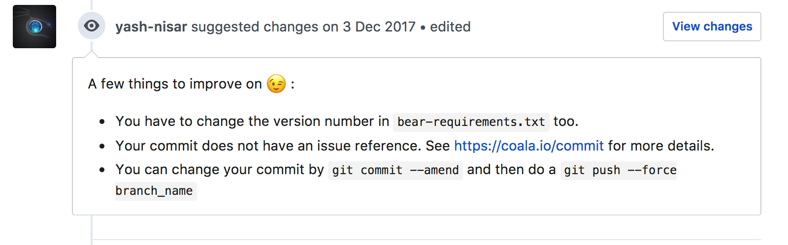
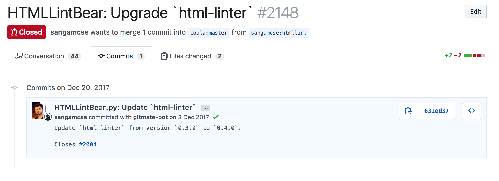
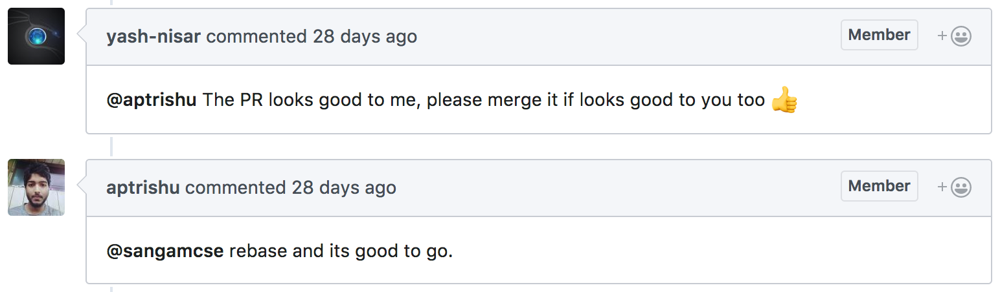
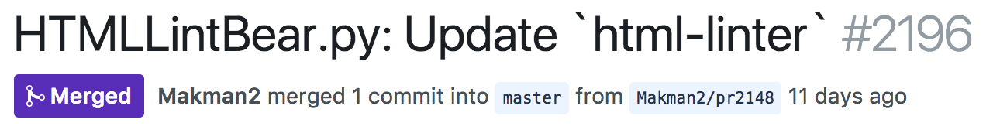

KWoC-Kharagpur Winter of Code
End-term Report
Introduction
Kharagpur Winter of Code is a 5-week long online programme for the students of various colleges, who are new to open source software development. The programme helps students to get involved in open source and prepares them for many open source summer programmes like Google Summer of Code.
Hi, Myself Sangam Kumar. My github id is sangamcse. I came to know about the programme in an Open Source Workshop during Abhiyantran, NIT Sikkim 2017. I registered for it on 20th Nov 2017 and started choosing a project. My semester exam ended on 22nd Nov 2017 so I was free to start coding.
Choosing a Project
After registration, next step was to find a suitable project from the listed projects.
I found Coala very interesting for me. It provides a unified interface for linting and fixing code with a single configuration file, regardless of the programming languages used. I joined the gitter communication channel of coala and read the newcomer guidelines. My mentor for this project is Yash Nisar. I contacted him personally via facebook. He guided me to take all the steps to start. I started contributing after all the steps done.
Commiting on Github
My First PR
To start contribution on Coala, there were some rules to follow. It was all given in the newcomer guidelines. Next step was to find a difficulty/newcomer issue. I chose a issue which was opened by my mentor. The issue was very easy for me. I solved the issue and sent the PR. But let me tell you that getting merged the PR was not so easy.
Changes required in the issue was not this much. So Yash Nisar told me to make some more changes in another file. So my final change looks like this.
And there were some more issue in the PR. There was a failing test case on circleCI but it was something related to inability to fetch some dependency. The gitmate-bot was checking the commit and my commit was not proper, so Yash Nisar helped me in that.
 Suggestion by mentor
I made some changes in my commit which is now looks like below.
 Changes in commit as suggested
And it passed all test cases for my first PR. It was ready to merge but maintainer was taking some time to merge it. So the mentor suggested to rebase my branch.
 Suggestion by mentor
On 24th Dec, finally my first PR got merged into the master branch of coala/coala-bear.
 Merged PR
My Second PR
Before choosing my second issue, I reviewed 2/3 difficulty/newcomer PRs. I was continuous active on gitter channel of coala. Then I searched for a difficulty/low issue.
However I chose a needs-design issue. This issue requires changes in coala.io/#/languages page where in place of programming language's name, there should be programming language's logo.
I have sent a PR which is some changes in css.
This PR still needs approval. I am working on a script to fetch the logo from wikidata and add that logo to the issue. @jayvdb, who is one of the owners of coala, is helping me in that script. That script needs pywikidata api.
Post KWoC
KWoC is ending now but since it’s an open source project, I could contribute to it anytime. I’ve planned to fix the issues in coala issue's list.
I've planned to contribute to some other open-source, too.
Finally, I would like to thanks my mentor Yash Nisar for helping me. I hope he will be there when I need his mentorship. Lot more to learn from you. Thanks again!🙂 Also thank you Kharagpur Open Source Society(KOSS) and the people at KOSS for organizing Kharagpur Winter of Code and making sure that every students who are new to the open source get benefited.
Sangam Kumar
GitHub ID: sangamcse
4 Jan 2018